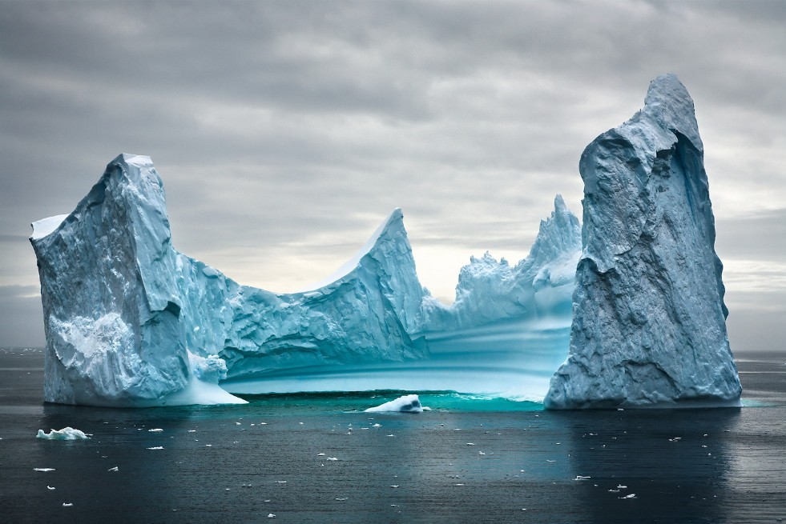

Poles
|  | Coliseo de Hielo | |
| Esta imagen curiosa de un Glaciar en el Oceano Austral, muestra una formación de hielo que se asemeja a un coliseo romano gigante, destacando la belleza y singularidad de las formaciones naturales en los polos, y que en algunos casos coinciden con estructuras creadas por el ser humano | ||
| Etiquetas: #2007 #Glaciar #OceanoAustral #Atlántico #FormacionesNaturales | ||
|
Oso Polar |
| Foto de un joven oso polar en el Ártico, que busca sobrevivir en un entorno cada vez mas hostil debido al calentamiento global que afecta a su hábitat, teniendo que deambular por zonas con presencia humana en busca de alimento | |
| Etiquetas: #2012 #OsoPolar #Ártico #Animales |
 |
La punta del Iceberg | |
| En medio del oceano Ártico, un iceberg flota majestuosamente, revelando solo una pequeña fracción de su masa total sobre la superficie del agua, pero escondiendo debajo de ella una vasta y compleja estructura que se extiende hacia las profundidades del océano | ||
| Etiquetas: #2018 #Glaciar | ||
 |
Piscina de la Naturaleza | |
| Imagen aérea de una formación natural en un glaciar que debido al deshielo crea una piscina de agua azul turquesa rodeada de hielo blanco, creando un contraste visual impresionante que resalta la belleza efímera de estos paisajes polares | ||
| Etiquetas: #2012 #Glaciar #Deshielo #Aérea #Atlántico #FormacionesNaturales | ||
 |
Manada de Pingüinos | |
| Imagen de una manada de pingüinos emperador en la Antártida recorriendo un bloque de hielo de la Antártida | ||
| Etiquetas: #2018 #Aérea #Animales #Pingüinos | ||